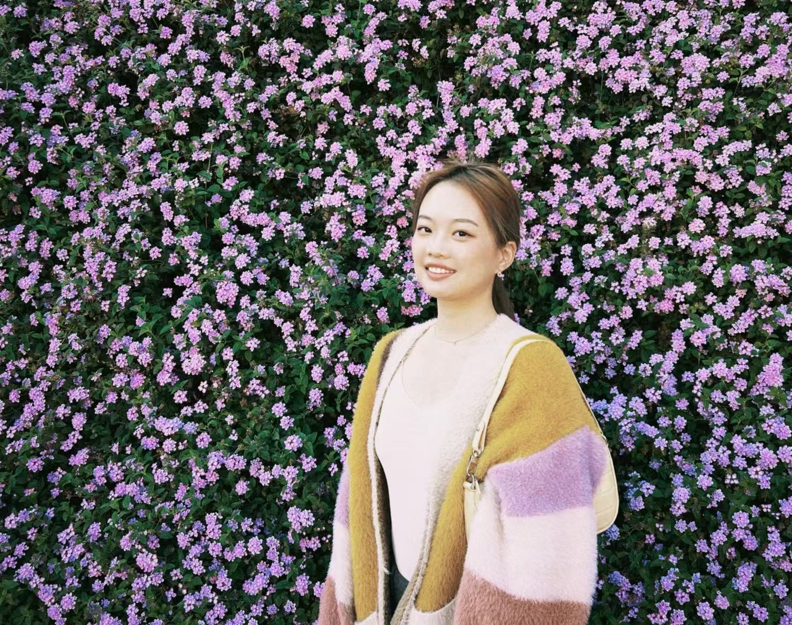

Start with the moment
从关键节点出发
Translate product launches, holidays, customer benefits, giveaways, and UGC opportunities into a campaign idea people can understand quickly.
把新品、节日、用户权益、Giveaway 与 UGC 机会转化为消费者能够快速理解的 Campaign 创意。
At the intersection of creative and performance, I uncover consumer insights, shape messaging and content, then use organic signals, paid experiments, and data to find what deserves to scale. Across nearly four years in B2C growth, I’ve led integrated GTM campaigns, managed $400K+ in paid media, and built AI-enabled workflows that make creative production faster without losing human judgment.
我站在创意与效果增长的交叉点：从消费者洞察、信息策略和内容创意出发，再通过自然流量信号、付费实验与数据，找到真正值得放大的增长方向。近四年的 B2C 增长经历中，我负责过整合 GTM campaign、管理 $400K+ 付费媒体预算，并搭建 AI workflow，让创意生产更快，同时保留人的判断与洞察。

I’m a B2C growth marketer who connects consumer insight, creative strategy, and performance. My work spans the full journey—from product and campaign launches to messaging, content production, creator programs, paid media testing, and measurement. Across Tripalink, ShipSaving, and Weee!, I learned how to spot what resonates organically, turn it into stronger creative, and scale it through paid channels. I’m especially excited by fast-growing consumer and AI products where strong ideas can become meaningful user growth.
我是一名连接消费者洞察、创意策略与效果增长的 B2C 增长营销人。我的工作覆盖完整链路——从产品与 campaign 上线、信息策略、内容制作和达人项目，到付费媒体测试与效果复盘。在 Tripalink、ShipSaving 和 Weee! 的经历让我擅长从自然内容中发现用户真正感兴趣的信号，再把它转化为更强的创意，并通过付费渠道规模化。我尤其希望加入高速增长的消费或 AI 产品团队，让好的想法真正转化为用户增长。
From hands-on creator to AI-enabled growth marketer. At Weee!, I turn product launches, cultural moments, and new customer benefits into end-to-end growth campaigns—starting with consumer insight and messaging, then shaping the creative, guiding writers and agency partners, and testing what resonates across organic and paid channels. As AI reshaped how marketing gets made, I brought it into my everyday workflow: moving from shooting every asset by hand to using AI for images, video, and repeatable creative systems. It didn’t just make execution faster; it gave me more room to study messaging, creative patterns, and ad performance—and helped me become a trusted cross-functional partner across merchandising, performance marketing, and agency teams.
从亲手制作每一条内容，到成为 AI-enabled growth marketer。 在 Weee!，我把新品上线、文化节日和新的消费者权益转化为端到端的增长 campaign：从理解产品卖点、洞察用户和打磨 messaging 开始，到规划创意形式、管理写手与 agency，再与 performance marketing 团队一起测试自然内容和付费创意。当 AI 开始改变营销内容的生产方式时，我也把它真正带进了日常工作——从所有素材依赖手拍，到使用 AI 生成图片、视频并搭建可复用的 creative workflow。它带来的不只是执行提速，也让我有更多空间研究什么样的信息、创意和广告组合真正有效，并逐渐成为采购、投放和外部合作团队之间值得信赖的跨部门伙伴。
Building a multi-channel acquisition engine with a startup-sized budget. At ShipSaving, I learned how to build acquisition without a mature playbook—or a large budget. Working with a lean team and roughly $4K a month in paid media, I owned the hands-on work across Google Ads, SEO, social content, and partnership-driven growth. I built influencer and guest-blogger programs from 0→1, developed the backlink and keyword systems behind organic growth, and supported a major UPS GTM launch. The experience taught me to prioritize ruthlessly, test quickly, and turn limited resources into a repeatable acquisition engine.
用 startup 级别的预算，搭建一套多渠道获客体系。 在 ShipSaving，我学习了如何在没有成熟 playbook、预算和人力都有限的情况下建立用户增长。依靠每月约 $4K 的付费媒体预算，我亲手负责 Google Ads、SEO、社媒内容和合作渠道增长，并从 0→1 搭建 influencer 与 guest blogger 项目，建立支持自然增长的关键词和 backlink 体系，同时参与 UPS 重要合作项目的 GTM 上线。这段经历让我学会快速确定优先级、用实验寻找有效方向，并把有限资源转化为可以持续运转的获客系统。
Discovering how local insight turns attention into demand. At Tripalink, I worked at the intersection of community, partnerships, and demand generation across West LA and Seattle. I translated local market needs into campus activations, resident events, co-marketing partnerships, SEO-optimized listings, and review programs—building a bridge between offline attention and leasing outcomes. Partnering closely with sales and property teams taught me how to adapt campaigns to different neighborhoods, turn face-to-face conversations into qualified demand, and keep creative ideas accountable to occupancy and retention.
理解本地用户，把现场关注转化为真实需求。 在 Tripalink，我在西洛杉矶和西雅图的社区运营、品牌合作与 demand generation 交叉点上工作。我把本地市场需求转化为校园 activation、住户活动、联合营销、SEO 优化房源和评价项目，在现场关注度与实际租赁结果之间建立连接。与销售和物业团队的紧密合作让我学会针对不同社区调整 campaign，把面对面的交流转化为高意向需求，并始终用入住率和续租率检验创意是否真正有效。
My graduate education was one continuous two-year journey: a first year at LSE in London, followed by a second year at USC Annenberg in Los Angeles. LSE gave me a theoretical foundation in media, globalization, identity, and research; USC helped me turn that perspective into applied marketing, consumer insight, organizational messaging, digital entertainment, and communication research. I graduated from USC with a 3.90 GPA—and with a habit I still use today: start with the audience, find the cultural tension, then build a strategy people can act on.
我的研究生经历不是两个彼此独立的学位，而是一段连续的两年跨国学习：第一年在伦敦 LSE，第二年在洛杉矶 USC Annenberg。LSE 让我建立媒体理论、全球化、身份与研究方法的理论基础，USC 则帮助我把这套视角转化为应用型营销、消费者洞察、组织 messaging、数字娱乐与传播研究。我以 3.90 GPA 从 USC 毕业，也形成了至今仍在使用的方法：先理解受众与文化张力，再把洞察转化为真正可以执行的增长策略。
A Gen Z growth plan spanning positioning, TikTok and Instagram, virtual influencers, experiential retail, channel strategy, and an early AI-influencer roadmap.
围绕 Gen Z 用户完成品牌定位、TikTok 与 Instagram、虚拟 influencer、线下体验、渠道策略和早期 AI influencer roadmap。
View full deck ↗ 查看完整项目 ↗A research-led growth plan moving from audience segmentation to creator content, campus interviews, experiential pop-ups, cast engagement, and measurable KPIs.
从用户细分出发，延伸到 creator 内容、校园街访、沉浸式 pop-up、演员互动和可衡量 KPI 的完整增长方案。
View full deck ↗ 查看完整项目 ↗Where I first connected culture, creativity, and measurable media. At Temple, I built an interdisciplinary foundation in communication through concentrations in International Communication and Communication & Entrepreneurship, plus a minor in Digital Media Engagement. Coursework in advertising, media planning, social media marketing, SEO, digital analytics, persuasive writing, art direction, and intercultural communication taught me to see marketing as both a creative and analytical discipline—the same balance that now defines my growth work.
我第一次把文化洞察、创意表达与可衡量的媒体效果连接起来。 在 Temple，我以 Communication Studies 为主修，并完成 International Communication 和 Communication & Entrepreneurship 两个 concentration，以及 Digital Media Engagement 辅修。Advertising、media planning、social media marketing、SEO、digital analytics、persuasive writing、art direction 与 intercultural communication 等课程，让我很早就开始把营销理解为一门同时需要创意判断和数据思维的学科——这也成为后来我做 growth marketing 的基础。
Introduction to Marketing · Media Planning · Social Media Marketing · Search Engine Optimization · Digital Analytics & Reporting · Persuasive Writing · Art Direction · Creative Thinking in Advertising · Intercultural Communication
市场营销导论 · 媒体策划 · 社交媒体营销 · 搜索引擎优化 · 数字分析与报告 · 说服性写作 · 艺术指导 · 广告创意思维 · 跨文化传播
Explore my work by capability. Each collection opens into the thinking, execution, and outcomes behind the work—without turning the homepage into a wall of projects.
按能力方向查看我的作品。点击任一分类，即可进一步了解项目背后的思考、执行与成果，同时保持首页清晰易读。
At Weee!, I connected merchandising insight, consumer messaging, creative production, creator coordination, organic distribution, and paid testing. The work was not just “running social”—it was building a repeatable path from a product or cultural moment to measurable audience and user growth.
在 Weee!，我把采购与产品洞察、消费者信息策略、创意制作、创作者协作、自然分发与付费测试连接起来。我的工作并不只是“运营社交账号”，而是建立从产品或文化节点到可衡量受众与用户增长的完整路径。
Translate product launches, holidays, customer benefits, giveaways, and UGC opportunities into a campaign idea people can understand quickly.
把新品、节日、用户权益、Giveaway 与 UGC 机会转化为消费者能够快速理解的 Campaign 创意。
Shape the hook, messaging and format; brief writers and agency partners; then stay hands-on where creative judgment matters most.
确定 Hook、信息策略和内容形式，管理写手与 Agency，并在最需要创意判断的环节亲自执行。
Use organic response and paid experiments to identify which messages and formats deserve another iteration or wider distribution.
结合自然内容反馈与付费测试，判断哪些信息和形式值得继续迭代或扩大分发。
Only public-facing work and aggregated results are included. Confidential strategy, dashboards, targeting details, and internal data are intentionally omitted.
本案例仅展示公开作品和汇总结果；内部策略、Dashboard、定向细节与未公开数据均已省略。
My performance approach starts before the media buy. I look for organic signals and consumer friction, turn them into creative hypotheses, test messages and formats through paid channels, then use the results to sharpen the next round of creative.
我的 Performance 方法并不是从买量开始。我会先寻找自然内容信号和消费者痛点，把它们转化为创意假设，再通过付费渠道测试信息与形式，并用结果反向优化下一轮创意。
Find recurring hooks, comments, pain points, and organic creative patterns that reveal what the audience already cares about.
从 Hook、评论、痛点和自然内容规律中，识别受众已经在意的内容。
Turn the signal into distinct creative variables—message, opening, visual structure, offer, or audience framing.
把信号拆解为不同创意变量：信息、开头、视觉结构、Offer 或受众表达。
Use performance to decide what to iterate, retire, or scale—without separating media efficiency from creative quality.
根据表现判断哪些内容应继续迭代、停止或扩大，而不是把媒体效率和创意质量割裂开来。
I use AI as an execution multiplier—not a substitute for consumer insight or creative judgment. Images, video, copy, and lightweight internal tools help me explore more directions, reduce repetitive work, and spend more time deciding what is strategically worth making.
我把 AI 当作执行放大器，而不是消费者洞察或创意判断的替代品。AI 图片、视频、文案与轻量内部工具让我能探索更多方向、减少重复工作，并把更多时间放在判断什么值得做上。
Define the audience tension, message, visual territory and success criteria before generating assets.
在生成素材之前先明确受众张力、信息、视觉方向与成功标准。
Generate and adapt images, video, copy, and variations while keeping brand and product facts grounded.
在保证品牌与产品事实准确的前提下，生成并调整图片、视频、文案和创意变体。
Use lightweight workflows and vibe-coded tools to remove repetitive steps and make future execution faster.
通过轻量 Workflow 与 Vibe Coding 工具减少重复步骤，让后续执行更快。
This portfolio began as an unfinished page and became a bilingual, responsive personal-brand product through AI-assisted interviewing, positioning, writing, information architecture, visual design, coding, QA, and GitHub Pages deployment. I directed the narrative and judgment; AI accelerated the making.
这个作品集从一个未完成的页面开始，通过 AI 辅助职业访谈、定位、写作、信息架构、视觉设计、编码、测试与 GitHub Pages 部署，成为一个双语响应式个人品牌产品。叙事和判断由我主导，AI 加速了制作过程。
Mango Pets US · Product storytelling for cat people
Mango Pets US · 为养猫人而做的产品叙事
As a part-time social content creator for a cat-products brand, I produce hands-on short-form video that makes product benefits easy to understand without losing the personality of the feed. The work spans two complementary modes: clear, conversion-minded product demonstrations and trend-led concepts built around real cat behavior and owner pain points.
作为猫咪用品品牌的兼职社交媒体内容创作者，我通过亲自拍摄短视频，让产品卖点更容易被理解，同时保留社交平台需要的趣味与个性。内容主要分为两种互补方向：清晰、以转化为导向的产品展示，以及从真实猫咪行为和养猫痛点出发的趋势型创意。
Clean demonstrations turn size, posture, splash protection and easier cleanup into visual proof—not a list of product claims.
通过清晰的产品演示，把大空间、进食姿势、防溅和易清洁等卖点转化为画面证据，而不是堆砌功能说明。
POV formats, recognizable cat behavior and trend-aware pacing make the content feel native to Instagram before the product reveal earns its place.
借助 POV、熟悉的猫咪行为与趋势化节奏，让内容先像一条自然的 Instagram 视频，再让产品顺理成章地出现。
A simple visual comparison makes extra space and high sides immediately understandable for big cats and enthusiastic diggers.
用直观的画面对比，让大空间与高边设计对大体型猫咪和爱刨砂猫咪的价值一眼可见。
Better posture, less mess and a polished setup are translated into an easy-to-follow product experience.
把更舒适的进食姿势、更少的脏乱与更美观的使用场景，转化为易理解的产品体验。
A familiar cat-owner moment creates instant recognition before the content asks the audience to notice the product.
从养猫人熟悉的零食反应切入，在产品出现之前先建立共鸣与观看兴趣。
A recognizable frustration leads the story; the splash guard and cleaner floor arrive as the visual payoff.
用容易共鸣的脏乱痛点推动故事，再让防溅设计与更干净的地面成为画面上的解决方案。